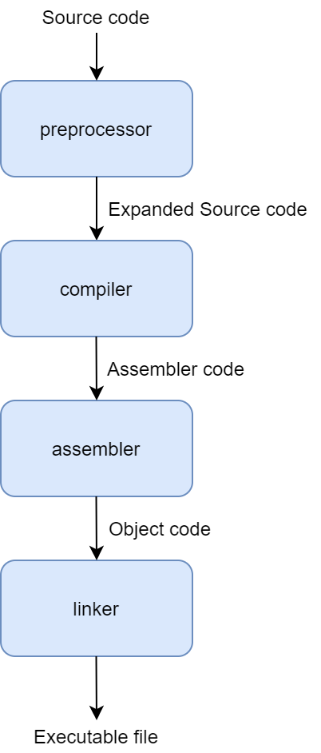
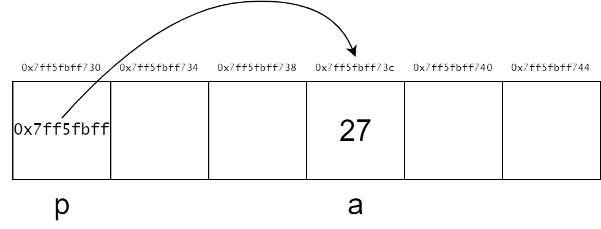
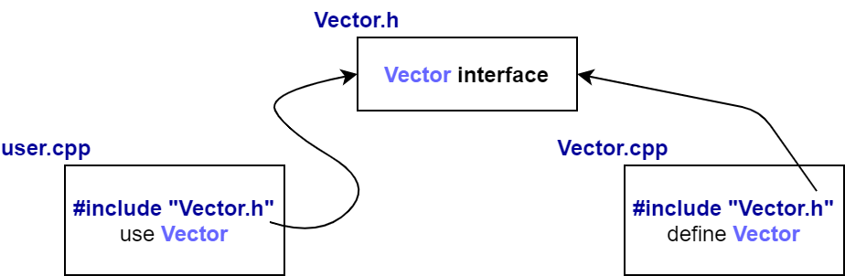

Introduction to C++
"A tour of C++" - Bjarne Stroustrup
(Chapters 1, 2 and 3)
Before C++, there was C
The C language was developed in 1972 by Dennis Ritchie at Bell labs
C was invented for writing operating systems
Primary goals:
- produce a minimalistic language that was easy to compile
- allow efficient access to memory
- produce efficient code
- do not need extensive run-time support.
For an high-level language, it was designed to be fairly low-level.
Platform-independent programming
C ended up being so efficient and flexible that in 1973, Ritchie and Ken Thompson rewrote most of the UNIX operating system using C
Many previous operating systems had been written in assembly
Unlike assembly, which ties a program to a specific CPU, C’s excellent portability allowed UNIX to be recompiled on many different types of computers speeding its adoption
Thanks to the portability of UNIX, C becomes very popular
In 1978, Brian Kerrigan and Dennis Ritchie published a book entitled "The C Programming Language"
This book caused a revolution in the computing world
In 1983, the American National Standards Institute (ANSI) established a committee to provide a modern, comprehensive definition of C.
The resulting definition, the ANSI standard, or "ANSI C", was completed in 1989
In 1990 the International Standardization Organization (ISO) adopted ANSI C (with a few minor modifications)
This version of C became known as C90
Compilers eventually became ANSI C/C90 compliant, and programs desiring maximum portability were coded to this standard
History of C++
Was developed by Bjarne Stroustrup at Bell Labs as an extension to C, starting at 1979
New features: classes, member functions, derived classes, separate compilation, public and private access control, friends, type checking of function arguments, default arguments, inline functions, overloaded assignment operator, constructors, destructors…
Formerly known as "C with Classes"
In 1983, the name of the language changes from "C with classes" to "C++"
The ++operator in the C language is an operator for incrementing a variable
The purpose of C++ is to make writing good programs easier and more pleasant for the individual programmer
The first edition of Stroustrup's book, "The C++ Programming Language", was published in early 1986
After the release of Version 2.0 in 1989, C++ was rapidly acknowledged as a serious, useful language
In 1997, a committee of the American National Standards Institute (ANSI) completed and published internally the Draft Standard - "The C++ Language"
The third edition of Stroustrup's book, was published in 1997 and is widely regarded as the definitive C++ reference.
C++ was ratified in 1998 by the ISO committee, and again in 2003 (called C++03)
Two updates to the C++ language (C++11 and C++14, ratified in 2011 and 2014 accordingly) have been made since then, adding additional functionality to the language
About C++
C++ is object oriented
C++ is statically typed
C++ is one of the predominant languages for the development of all kind of technical and commercial software
C++ has been used to develop other types of programming tools
C++ was built for speed and portability
C++ is a compiler type programming language: the source code is translated (compiled) into an intermediary form (Object file); different object files are combined into an executable program by a Linker
Deployment Cycle

Image from: http://www.w3processing.com/index.php?subMenuLoad=cpp/intro/Cycle.php
C++ Compiling
A C++ program typically consists of many source code files (usually simply called source files)
There are two kind of source code files:
- header files, which contains constants, declarations and redefined types and have .hpp extension (prefered) or .h
- source files, which contain the implementation code for any declaration done in the header files, and have cpp extension
Each source file is processed by the preprocessor, generating a text file
The text file is processed by the compiler (it is compiled) generating an object code (assembler) file
All the object files are combined by a linker, yielding an executable file
C++ Compiling Cycle
C++ Programs
An executable program is created for a specific hardware/system combination: it is not portable, say, from a Mac to a Windows PC
When we talk about portability of C++ programs, we usually mean portability of source code: the source code can be successfully compiled and run on a variety of systems
The ISO C++ standard defines two kinds of entities:
- Core language features, such as built-in types (e.g.,
charandint) and loops (e.g.,for-statements andwhile-statements) - Standard-library components, such as containers (e.g.,
vectorandmap) and I/O operations (e.g.,<<andgetline())
Hello World
The minimal C++ program is:
int main() { } // the minimal C++ programThis defines a function called main, which takes no arguments ad does nothing.
Curly braces, { }, express grouping in C++;
Double slash, //, begins a comment that extends to the end of the line
The int value returned by main, if any, is the program’s return value to "the system"
If no value is returned, the system will receive a value indicating successful completion
A nonzero value from main() indicates failure
Typically, a program produces some output
Here is a program that writes Hello, World!:
#include <iostream>
int main()
{
std::cout << "Hello, World!\n";
}The line #include <iostream> instructs the compiler to include the declarations of the standard stream I/O facilities as found in iostream
Without these declarations, the expression std::cout << "Hello, World!\n" would make no sense.
The operator << ("put to") writes its second argument onto its first
In this case, the string literal "Hello, World!\n" is written onto the standard output stream std::cout
A string literal is a sequence of characters surrounded by double quotes
In a string literal, the backslash character \ followed by another character denotes a single "special character"
In this case, \n is the newline character, so that the characters written are Hello, World! followed by a newline.
This is similar to:
#include <iostream>
int main()
{
std::cout << "Hello, World!" << std::endl;
}The std:: specifies that the name cout is to be found in the standard-library namespace
This is similar to:
#include <iostream>
using namespace std;
int main()
{
cout << "Hello, World!" << endl;
}Essentially, all executable code is placed in functions and called directly or indirectly from main()
#include <iostream>
using namespace std;
double square(double x)
{
return x * x;
}
void print_square(double x)
{
cout << "the square of " << x << " is " << square(x) << "\n";
}
int main()
{
print_square(1.234); // print the square of 1.234 is 1.52276
}A "return type" void indicates that a function does not return a value
Types, Variables and Arithmetic
Every name and every expression has a type that determines the operations that may be performed on it
For example, the declaration
int inch;specifies that inch is of type int; that is, inch is an integer variable.
A declaration is a statement that introduces a name into the program
It specifies a type for the named entity:
- A type defines a set of possible values and a set of operations (for an object)
- An object is some memory that holds a value of some type
- A value is a set of bits interpreted according to a type
- A variable is a named object
C++ offers a variety of fundamental types. For example:
bool // Boolean, possible values are true or false
char // character, for example, 'a', 'z' and '9'
int // integer, for example, -273, 42 and 1066
double // double-precision floating-point number, for example, -273.15, 3.14, and 299793.0
unsigned // non-negative integer, for example, 0, 1, and 999Each fundamental type corresponds directly to hardware facilities and has a fixed size that determines the range of values that can be stored in it:
bool:
char:
int:
double:
A char variable is of the natural size to hold a character on a given machine (typically an 8-bit byte)
Sizes of other types are quoted in multiples of the size of a char
The size of a type is implementation-defined (i.e., it can vary among different machines) and can be obtained by the sizeof operator
For example, sizeof(char) equals to 1 and sizeof(int) is often 4
| Name | Description | Size | Range |
|---|---|---|---|
char |
Character or small integer | 1 byte | signed: -128 to 127 unsigned: 0 to 255 |
short int |
Short integer | 2 bytes | signed: -32768 to 32767 unsigned: 0 to 65535 |
int |
Integer | 4 bytes | signed: -2147483648 to 2147483647 unsigned: 0 to 4294967295 |
long int |
Long integer | 4 bytes | signed: -2147483648 to 2147483647 unsigned: 0 to 4294967295 |
bool |
Boolean value. It can take one of two values: true or false | 1 byte | true or false |
float |
Floating point number | 4 bytes | 3.4e +/- 38 (7 digits) |
double |
Double precision floating point number | 8 bytes | 1.7e +/- 308 (15 digits) |
long double |
Long double precision floating point number | 8 bytes | 1.7e +/- 308 (15 digits) |
wchar_t |
Wide character | 2 bytes | 1 wide character |
#include <iostream>
int main() {
using std::cout;
cout << "The size of a bool is:\t\t" << sizeof(bool) << " bytes.\n";
cout << "The size of a char is:\t\t" << sizeof(char) << " bytes.\n";
cout << "The size of a short int is:\t" << sizeof(short) << " bytes.\n";
cout << "The size of an int is:\t\t" << sizeof(int) << " bytes.\n";
cout << "The size of a long int is:\t" << sizeof(long) << " bytes.\n";
cout << "The size of a float is:\t\t" << sizeof(float) << " bytes.\n";
cout << "The size of a double is:\t" << sizeof(double) << " bytes.\n";
return 0;
}The arithmetic operators can be used for appropriate combinations of these types:
x+y // plus
+x // unary plus
x−y // minus
-x // unary minus
x∗y // multiply
x/y // divide
x%y // remainder (modulus) for integersSo can the comparison operators:
x==y // equal
x!=y // not equal
x<y // less than
x>y // greater than
x<=y // less than or equal
x>=y // greater than or equalLogical operators are also provided:
x&y // bitwise and
x|y // bitwise or
x^y // bitwise exclusive or
~x // bitwise complement
x&&y // logical and
x||y // logical orIn assignments and in arithmetic operations, C++ performs all meaningful conversions between the basic types so that they can be mixed freely:
void some_function() //function that doesn't return a value
{
double d = 2.2; // initialise floating point number
int i = 7; // initialise integer
d = d + i; // assign sum to d
i = d * i; // assign product to i (truncating the double d*i to an int)
}C++ offers a variety of notations for expressing initialisation, such as the = used on previous slide, and an universal form based on curly-brace-delimited initialiser lists:
double d1 = 2.3; // initialize d1 to 2.3
double d2 {2.3}; // initialize d2 to 2.3
complex<double> z1 = 1; // a complex number with double-precision floating-point scalars
complex<double> z2 {d1,d2};
complex<double> z3 = {1,2}; // the = is optional with {...}The = form is traditional and dates back to C, but if in doubt, use the general {}-list form.
This saves from conversions that lose information:
int i1 = 7.2; // i1 becomes 7
int i2 {7.2}; // error: floating-point to integer conversion
int i3 = {7.2}; // error: floating-point to integer conversion (the = is redundant)When defining a variable, you don’t actually need to state its type explicitely when it can be deduced from the initialiser:
auto b = true; // a bool
auto ch = 'x'; // a char
auto i = 123; // an int
auto d = 1.2; // a double
auto z = sqrt(y); // z has the type of whatever sqrt(y) returnsWith auto, we use the = because there is no potentially troublesome type conversion involved
Use auto where you don’t have a specific reason to mention the type explicitly:
- The definition is in a large scope where we want the to make the type clearly visible to readers of our code
- We want to be explicit about a variable’s range or precision (e.g.:
doublerather thanfloat)
Using auto avoids redundancy and typing long type names.
This is especially important in generic programming where the exact type of an object can be hard for the programmer to know and the typenames can be quite long.
C++ also offers more specific operators for modifying a variable:
x+=y; // x = x + y
++x; // increment: x = x + 1
x-=y; // x = x - y
--x; // decrement: x = x - 1
x*=y; // scaling: x = x * y
x/=y; // scaling: x = x / y
x%=y; // x = x % yScope and Lifetime
The scope of a name is the area of the code where that name can be used.
The scope of any name is basically the block in which is defined.
A declaration introduces its name into a scope:
- Local scope;
- Class scope;
- Namespace scope.
Local Scope
A name declared in a function or lambda is called a local name.
Its scope extends from its point of declaration to the end of the block in which its declaration occurs.
A block is delimited by a {} pair.
Function argument names are considered local names.
Class Scope
A name is called a member name (or a class member name) if it is defined in a class, outside any function, lambda or enum class.
Its scope extends from the opening { of its enclosing declaration to the end of that declaration.
Namespace Scope
A name is called a namespace member name if it is defined in a namespace outside any function, lambda, or enum class.
Its scope extends from the point of declaration to the end of its namespace.
A name not declares inside any other construct is called a global name and is said to be in the global namespace.
In addition, you can have objects without names, such as temporaries and objects created using new:
vector<int> vec; // vec is global (a global vector of integers)
struct Record{
string name; // name is a member (a string member)
// ...
};
void fct(int arg) // fct is global (a global function declaration)
// arg is local (an integer argument)
{
string motto {"Who dares win"}; // motto is local
auto p = new Record{"Hume"}; // p point to an unnamed Record (created by new)
//...
}An object must be constructed (initialized) before it is used and will be destroyed at the end of its scope.
For a namespace object, the point of destruction is the end of the program.
For a member, the point of destruction is determined by the point of destruction of the object which it is a member.
An object created by new "lives" until destroyed by delete.
Static Local Variables
The static local variables are exactly like global variables, only they have local scope, as shown in the following code:
void testFunc() {
static int runCount = 0; // this only runs ONCE, even on
// subsequent calls to testFunc()
cout << "Ran this function " << ++runCount << " times" << endl;
} // runCount stops being in scope, but does not die here
int main()
{
testFunc();
testFunc();
}Ran this function 1 times Ran this function 2 times
With the use of the static keyword inside testFunc(), the runCount variable remembers its value between calls of testFunc().
So, the output of the two separate preceding runs of testFunc() is:
Ran this function 1 times Ran this function 2 times
Constants
C++ supports two notions of immutability:
const:- Means roughly "I promise not to change this value";
- Used primarily to specify interfaces, so that data can be passed to functions with out fear of being modified;
- The compiler enforces the promise made by
const. constexpr:- Means roughly "to be evaluated at compile time";
- Used primarily to specify constants, to allow placement of data in readonly memory (where it is unlikely to be corrupted) and for performance.
const int dmv = 17; // dmv is a named constant
int var = 17; // var is not a constant
constexpr double max1 = 1.4*square(dmv); // OK if square(17) is a constant expression
constexpr double max2 = 1.4*square(var); // error: var is not a constant expression
const double max3 = 1.4*square(var); // OK, may be evaluated at run time
double sum(const vector<double>&); // sum will not modify its argument
vector<double> v {1.2, 3.4, 4.5}; // v is not a constant
const double s1 = sum(v); // OK: evaluated at run time
constexpr double s2 = sum(v); // error: sum(v) not constant expressionFor a function to be usable in a constant expression, that is, in an expression that will be evaluated by the compiler, it must be defined constexpr:
constexpr double square(double x) { return x*x; }To be constexpr, a function must be rather simple: just a return-statement computing a value.
A constexpr function can be used for non-constant arguments, but when that is done the result is not a constant expression.
We allow a constexpr function to be called with non-constant-expression arguments in contexts that do not require constant expressions, so that we don’t have to define essentially the same function twice: once for constant expressions and once for variables.
Arrays, Pointers and References
Arrays
An array of elements of type char can be declared like this:
char v[6]; // array of 6 charactersIn declarations, [] means “array of”.
All arrays have 0 as their lower bound, so v has six elements: v[0] to v[5].
The size of an array must be a constant expression.
int v[5] {1, 2, 3, 4, 5};
for(int i = 0; i < 5; ++i) {
cout << v[i] << endl;
}
1 2 3 4 5
C++ also offers a simpler for-statement, called range-for-statement, for loops that traverse a sequence in the simplest way:
int v[5] {1, 2, 3, 4, 5};
for(auto x : v) {
cout << x << endl;
}
1 2 3 4 5
int v[5] {1, 2, 3, 4, 5};
for(auto x : v) {
cout << x << endl;
}
The range-for-statement can be read as "for every element of v, from the first to the last, place a copy in x and print it."
Note that we don’t have to specify an array bound when we initialize it with a list.
The range-for-statement can be used for any sequence of elements.
Pointers
"A pointer is a variable that contains the address of a variable" [Kernighan and Ritchie, 1988, page 93]
The pointer is a mechanism for direct memory manipulation.
A pointer variable holds the address of an object.
When we say that a pointer is "pointing to a certain object", this means that the pointer variable is storing the memory address where the pointed object is.
A pointer can be declared like this:
int* p;A pointer variable holds the address of an object of the appropriate type:
int* p = &v[4]; // p points to v's fifth element
int x = *p; // *p is the object that p points toint a = 27; // a = 27
int* p;
p = &a; // p stores the address of a
cout << "Pointer p is storing " << p << " memory address" << endl;
cout << "Variable a is stored in " << &a << " memory address" << endl;
cout << "The content of variable pointed by p is " << *p << endl;
cout << "Since p pointer is also a variable, it is stored at " << &p << " memory address" << endl;Pointer p is storing 0x7ff5fbff73c memory address Variable a is stored in 0x7ff5fbff73c memory address The content of variable pointed by p is 27 Since p pointer is also a variable, it is stored at 0x7ff5fbff730 memory address
void swap(int a, int b)
{
int aux = a;
a = b;
b = aux;
}
int main()
{
int a = 3, b = 2;
cout << "Before swap: a = " << a << " b = " << b << endl;
swap(a, b);
cout << "After swap: a = " << a << " b = " << b << endl;
}Before swap: a = 3 b = 2
After swap a = 3 b = 2void swap(int *a, int *b)
{
int aux = *a;
*a = *b;
*b = aux;
}
int main()
{
int a = 3, b = 2;
cout << "Before swap: a = " << a << " b = " << b << endl;
swap(&a, &b);
cout << "After swap: a = " << a << " b = " << b << endl;
}Before swap: a = 3 b = 2
After swap a = 2 b = 3Null Pointer: nullptr
We try to ensure that a pointer always points to an object, so that dereferencing it is valid.
When we don’t have an object to point to or if we need to represent the notion of ‘‘no object available’’ (e.g., for an end of a list), we give the pointer the value nullptr ("the null pointer").
Thre is only one nullptr shared by all pointer types:
double* pd = nullptr;
Link<Record>* lst = nullptr; // pointer to a Link to a Record
int x = nullptr; // error: nullptr is a pointer and not an integerIt is often wise to check that a pointer argument that is supposed to point to something, actually points to something:
int count_x(char* p, char x)
// count the number of occurrences of x in p[]
// p is assumed to point to a zero-terminated array of char (or to nothing)
{
if (p==nullptr) return 0;
int count = 0;
for (; *p!=0; ++p)
if (*p==x) ++count;
return count;
}Note how we can move a pointer to point to the next element of an array using ++ and that we can leave out the initializer in a for-statement if we don’t need it.
The definition of count_x assumes that the char* is a C-style string, that is, that the pointer points to a zero-terminated array of char.
In older code, 0 or NULL is typically used instead of nullptr.
However, using nullptr eliminates potential confusion between integers (such as 0 or NULL) and pointers (such as nullptr).
References
In a declaration, the unary suffix & means "reference to".
A reference is similar to a pointer, except that you don’t need to use a prefix * to access the value referred by the reference.
Also, a reference cannot be made to refer to a different object after its initialization.
References are particularly useful for specifying function arguments:
void sort(vector<double>& v);By using a reference, we ensure that for a call sort(my_vec), we do not copy my_vec and that it really is my_vec that is sorted and not a copy of it.
When we don’t want to modify an argument, but still don’t want the cost of copying, we use a const reference:
double sum(const vector<double>& v);Recall this example:
int v[5] {1, 2, 3, 4, 5};
for(auto x : v) {
cout << x << endl;
}If we didn’t want to copy the values from v into the variable x, but rather just have x refer to an element, we could write:
int v[5] {1, 2, 3, 4, 5};
for(auto& x : v) {
cout << x << endl;
}int v[] = {0,1,2,3,4,5,6,7,8,9};
for (auto& x : v)
++x;
for(auto& x : v)
cout << x << endl;
1 2 3 4 5 6 7 8 9 10
void swap(int a, int b)
{
int aux = a;
a = b;
b = aux;
}
int main()
{
int a = 3, b = 2;
cout << "Before swap: a = " << a << " b = " << b << endl;
swap(a, b);
cout << "After swap: a = " << a << " b = " << b << endl;
}
before swap: a = 3 b = 2 After swap: a = 3 b = 2
void swap(int *a, int *b)
{
int aux = *a;
*a = *b;
*b = aux;
}
int main()
{
int a = 3, b = 2;
cout << "Before swap: a = " << a << " b = " << b << endl;
swap(&a, &b);
cout << "After swap: a = " << a << " b = " << b << endl;
}
before swap: a = 3 b = 2 After swap: a = 2 b = 3
void swap(int &a, int &b)
{
int aux = a;
a = b;
b = aux;
}
int main()
{
int a = 3, b = 2;
cout << "Before swap: a = " << a << " b = " << b << endl;
swap(a, b);
cout << "After swap: a = " << a << " b = " << b << endl;
}
before swap: a = 3 b = 2 After swap: a = 2 b = 3
User-Defined Types
The types that can be built from the fundamental types, the const modifier, and the declarator operators are the built-in types.
C++’s set of built-in types and operations is rich, but deliberately low-level.
They don’t provide the programmer with high-level facilities to conveniently write advanced applications.
Instead, C++ augments the built-in types and operations with a sophisticated set of abstraction mechanisms out of which programmers can build such high- level facilities.
The C++ abstraction mechanisms are primarily designed to let programmers design and implement their own types, with suitable representations and operations, and for programmers to simply and elegantly use such types.
Types built out of the built-in types using C++’s abstraction mechanisms are called user-defined types.
They are referred to as classes and enumerations.
Structures
The first step to build a new type is often to organize the elements it need into a data structure, a struct:
struct Player {
string name;
int hp;
};
This is the structure definition for what makes a Player object.
The player has a string for his name and an integer for his hp value.
struct Player {
string name;
int hp;
};
int main()
{
Player me; // create an instance of the Player, called me
// from here, we can access the fields of the me object, like so:
me.name = "Peter";
me.hp = 100;
}
We use . (dot) to access struct members through a name (and through a reference) and -> to access struct members through a pointer:
void func(Player p, Player& rp, Player* pp)
{
int i1 = p.hp;
int i2 = rp.hp;
int i3 = pp->hp;
}Classes
A set of members:
- data
- function
- type members
Interface is defined by the public members
private members are accessible only through that interface
class Vector {
public:
Vector (int s): elem{new double[s]}, sz{s} {} // construct a Vector
double &operator[](int i) {return elem[i];}
int size(){return sz;}
private:
double *elem; // pointer to the elements
int sz; // the number of elements
};
We can define a variable of type Vector:
Vector v(6);The vector object is a "handle" containing a pointer to the elements (elem) plus the number of elements (sz).
The number of elements can vary from Vector object to Vector object.
However, the Vector object itself is always the same size.
This is the basic technique for handling varying amounts of information in C++: a fixed-size handle referring to a variable amount of data "elsewhere".
class Vector {
public:
Vector (int s): elem{new double[s]}, sz{s} {} // construct a Vector
double &operator[](int i) {return elem[i];}
int size(){return sz;}
private:
double *elem; // pointer to the elements
int sz; // the number of elements
};
Vector (int) defines how objects of type Vector are constructed.
In particular, it states that it needs an integer to do that.
That integer is used as the number of elements.
The constructor initializes the Vector members using a member initializer list:
elem{new double[s]}That is, we first initialize elem with a pointer to s elements of type double manually allocated.
Then, we initialize sz to s.
class Vector {
public:
Vector (int s): elem{new double[s]}, sz{s} {} // construct a Vector
double &operator[](int i) {return elem[i];}
int size(){return sz;}
private:
double *elem; // pointer to the elements
int sz; // the number of elements
};
Access to elements is provided by a subscript function, called operator[].
It returns a reference to the appropriate element (a double&).
The size() function is supplied to give users the number of elements.
There is no error handling.
There is no mechanism to free the array of doubles acquired by new.
class Vector {
public:
Vector (int s): elem{new double[s]}, sz{s} {} // construct a Vector
double &operator[](int i) {return elem[i];}
int size(){return sz;}
private:
double *elem; // pointer to the elements
int sz; // the number of elements
};
double read_and_sum(int s) {
Vector v(s); // make a vector of s elements
for (int i=0; i!=v.size(); ++i)
cin>>v[i]; // read into elements
double sum = 0;
for (int i=0; i!=v.size(); ++i)
sum+=v[i]; // take the sum of the elements
return sum;
}
There is no fundamental difference between a struct an a class.
A struct is simply a class with members public by default.
You can define constructors and other member functions for a struct.
Enumerations
Besides classes, C++ also supports a simple form of user-defined type for enumerating values:
enum class Color{red, blue, green};
enum class Traffic_light {green, yellow, red};
Color col = Color::red;
Traffic_light light = Traffic_light::red;Note that enumerators (e.g., red) are in the scope of their enum class.
This way, they can be used repeatedly in different enum classes without confusion.
For example, Color::red is Color’s red which is different from Traffic_light::red.
Enumerations are used to represent small sets of integer values.
They are used to make code more readable and less error-prone than it would have been had the symbolic (and mnemonic) enumerator names not been used.
The class after the enum specifies that an enumeration is strongly typed and that its enumerators are scoped.
Being separate types, enum classes help prevent accidental misuses of constants.
In particular, we cannot mix Color and Traffic_light values:
Color x = red; // error : which red?
Color y = Traffic_light::red; // error: that red is not a Color
Color z = Color::red; // OK
Similarly, it is not possible to mix Color and integer values:
int i = Color::red; // error: Color::red is not an int
Color c = 2; // error: 2 is not a Color
If you don’t want to explicitly qualify enumerator names and want enumerator values to be ints (without the need for an explicit conversion), you can remove the class from enum class to get a "plain enum".
By default, an enum class has only assignment, initialization, and comparisons (e.g., == and <) defined.
However, an enumeration is a user-defined type so we can define operators for it:
Traffic_light& operator++(Traffic_light& t)
// prefix increment ++
{
switch(t) {
case Traffic_light::green : return t = Traffic_light::yellow;
case Traffic_light::yellow : return t = Traffic_light::red;
case Traffic_light::red : return t = Traffic_light::green;
}
}
Traffic_light light = Traffic_light::red;
Traffic_light next = ++light; // next becomes Traffic_light::green
Unions
A union is a struct where all members are allocated at the same memory address.
The union occupies only the necessary space to store its largest member.
It only holds a value for one member at a time.
Consider the following example:
enum Type {str, num};
struct Entry {
char *name;
Type t;
char *s; // use s if t == str
int i; // use i if t == num
};
void f(Entry* p)
{
if(p->t == str)
cout << p->s;
// ...
}The members s and i can never be used at same time, so memory space is wasted.
This can be easily recovered by specifying that both should be member of an union.
union Value {
char *s;
int i;
};The language doesn’t keep track of which kind of value is held by a union.
Therefore, the programmer must do the following:
enum Type {str, num};
struct Entry {
char *name;
Type t;
Value v; // use v.s if t == str; use v.i if t == num
};
void f(Entry* p)
{
if(p->t == str)
cout << p->v.s;
// ...
}Maintaining the correspondence between a type field and the type held in an union is error-prone.
To avoid errors, you should encapsulate an union so that the correspondence between a type field and access to the union members is guaranteed.
At the application level, abstractions relying on such tagged unions are common and useful.
However, the use of "naked" unions is best minimized.
Modularity
A C++ program consists of functions, user-defined types, class hierarchies and templates.
The programmer should clearly define the interactions among those parts.
The first and most important step is to distinguish between the interface part and its implementation.
At the language level, C++ represents interfaces by declarations.
A declaration specifies all that’s needed to use a function or a type.
double sqrt(double); // the square root of function takes a double and returns a double
class Vector{
public:
Vector(int s);
double& operator[](int i);
int size();
private:
double* elem; // elem points to an array of sz doubles
int sz;
};The key point here is that the function bodies and the function definitions are in separate locations.
double sqrt(double d) // definition of sqrt
{
// ... algorithm is found in math textbook
}Vector::Vector(int s) // definition of the constructor
:elem{new double[s]}, sz{s} // initialize members
{
}
double& Vector::operator[](int i) {
return elem[i]; // definition of subscripting
}
int Vector::size() {
return sz;
}Separate compilation
C++ supports a notion of separate compilation where user code sees only declarations of types and functions used.
The definitions of those types and functions are in separate source files and compiled separately.
This can be used to organize a program into a set of semi-independent code fragments.
Such separation can be used to minimize compilation times and to strictly enforce separation of logically distinct parts of a program (thus, minimizing the chance of errors).
A library is often a separately compiled code fragments (e.g., functions).
Typically, we place the declarations that specify the interface to a module in a file with a name indicating its intended use.
// Vector.hpp:
class Vector {
public:
Vector(int s);
double& operator[](int i);
int size();
private:
double* elem; // elem points to an array of sz doubles
int sz;
};// user.cpp:
#include "Vector.hpp" // get Vector’s interface
#include <cmath> // get the the standard-library math function interface including sqrt()
using namespace std; // make std members visible
double sqrt_sum(Vector& v) {
double sum = 0;
for (int i=0; i!=v.size(); ++i) // sum of square roots
sum+=sqrt(v[i]);
return sum;
}// Vector.cpp:
#include "Vector.hpp" // get the interface
Vector::Vector(int s)
:elem{new double[s]}, sz{s}
{
}
double& Vector::operator[](int i)
{
return elem[i];
}
int Vector::size()
{
return sz;
}The code in user.cpp and Vector.cpp shares the Vector interface information presented in Vector.hpp, but the two files are otherwise independent and can be separately compiled.
Graphically, the program fragments can be represented like this:
Namespaces
In addition to functions, and enumerations, C++ offers namespaces as a mechanism for expressing that some declarations belong together and that their names shouldn’t conflict with other names.
The simplest way to access a name in another namespace is to qualify it with the namespace name (e.g., std::cout).
The main() function is defined in the global namespace, that is, not local to a defined namespace, class, or function.
To gain access to names in the standard-library namespace, we can use a using-directive:
using namespace std;Namespaces are primarily used to organize larger program components, such as libraries.
They simplify the composition of a program out of separately developed parts.
Error Handling
Exceptions
Consider again the Vector example.
What should be done when we try to access an element that is out of range for the vector from?
- The writer of
Vectordoesn’t know what the user would like to have done in this case (the writer ofVectortypically doesn’t even know in which program the vector will be running). - The user of
Vectorcannot consistently detect the problem (if the user could, the out-of-range access wouldn’t happen in the first place).
The solution is for the Vector implementer to detect the attempted out-of-range access and then tell the user about it.
The user can then take an appropriate action.
For example, Vector::operator[]() can detect an attempted out-of-range access and throw an out_of_range exception:
double& Vector::operator[](int i)
{
if (i<0 || size()<=i) throw out_of_range{"Vector::operator[]"};
return elem[i];
}The throw transfers control to a handler for exceptions of type out_of_range in some function that directly or indirectly called Vector::operator[]().
To do that, the implementation will unwind the function call stack as needed to get back to the context of that caller.
void f(Vector& v)
{
// ...
try { // exceptions here are handled by the handler defined below
v[v.size()] = 7; // try to access beyond the end of v
}
catch (out_of_range) { // oops: out_of_range error
// ... handle range error ...
}
// ...
}We put code for which we are interested in handling exceptions into a try-block.
That attempted assignment to v[v.size()] will fail.
Therefore, the catch-clause providing a handler for out_of_range will be entered.
The out_of_range type is defined in the standard library and is in fact used by some standard-library container access functions.
Use of the exception-handling mechanisms can make error handling simpler, more systematic, and more readable.
Invariants
The use of exceptions to signal out-of-range access is an example of a function checking its argument and refusing to act because a basic assumption, a precondition, didn’t hold.
Had we formally specified Vector’s subscript operator, we would have said something like "the index must be in the [0:size()) range", and that was in fact what we tested in our operator[]().
Whenever we define a function, we should consider what its preconditions are and if feasible test them.
However, operator[]() operates on objects of type Vector and nothing it does makes any sense unless the members of Vector have "reasonable" values.
In particular, we did say "elem points to an array of sz doubles" but we only said that in a comment.
Such a statement of what is assumed to be true for a class is called a class invariant, or simply an invariant.
It is the job of a constructor to establish the invariant for its class (so that the member functions can rely on it) and for the member functions to make sure that the invariant holds when they exit.
Our Vector constructor only partially did its job: it properly initialized the Vector members, but it failed to check that the arguments passed to it made sense:
Vector v(-27);Vector::Vector(int s) {
if (s<0) throw length_error{};
elem = new double[s];
sz = s;
}
We use the standard-library exception length_error to report a non-positive number of elements because some standard-library operations use that exception to report problems of this kind.
If operator new can’t find memory to allocate, it throws a std::bad_alloc.
This way, we can write:
void test() {
try {
Vector v(−27);
}
catch (std::length_error) {The static_assert mechanism can be used for anything that can be expressed in terms of constant expressions.
// handle negative size
}
catch (std::bad_alloc) {
// handle memory exhaustion
}
}You can define your own classes to be used as exceptions and have them carry arbitrary information from a point where an error is detected to a point where it can be handled.
Often, a function has no way of completing its assigned task after an exception is thrown.
Then, “handling” an exception simply means doing some minimal local cleanup and rethrowing the exception.
Static Assertions
Exceptions report errors found at run time.
If an error can be found at compile time, it is usually preferable to do so.
We can perform simple checks on properties that are known at compile time and report failures as compiler error messages:
static_assert(4<=sizeof(int), "integers are too small"); // check integer sizeThis will write "integers are too small" if 4<=sizeof(int) does not hold, that is, if an int on this system does not have at least 4 bytes.
We call such statements of expectations assertions.
The static_assert mechanism can be used for anything that can be expressed in terms of constant expressions.
constexpr double C = 299792.458; // km/s
void f(double speed) {
const double local_max = 160.0/(60∗60); // 160 km/h == 160.0/(60*60) km/s
static_assert(speed<C,"can't go that fast"); // error: speed must be a constant
static_assert(local_max<C,"can't go that fast"); // OK
// ...
}In general, static_assert(A,S) prints S as a compiler error message if A is not true.
The most important uses of static_assert come when we make assertions about types used as parameters in generic programming.